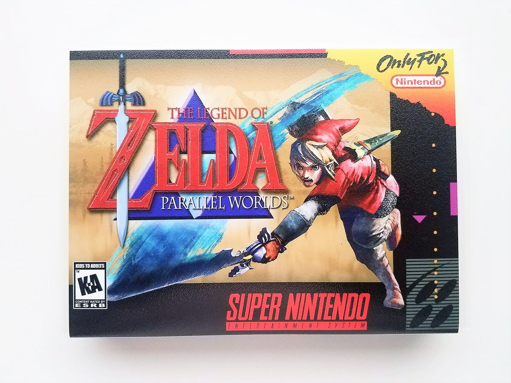

A História do The Legend of Zelda Parallel Worlds
imagem do jogo The Legend of Zelda Parallel Worlds
Bom, vou começar falando sobre esse hack maravilhoso, como vocês já sabem eu acho que em 1991 a Nintendo lançou o A Link to the Past para snes, então quando você zerou sentiu vontade de jogar denovo? Então como todos aqui já sabemos eu irei falar nesse post somente sobre esse Zelda de snes. Em 2006 uma galera fez esse hack de Zelda e enfim.
Para começar vou falar sobre os gráficos que são inovadores ! Ele possuí vários gráficos novos, vários gráficos antigos arrumados como o Link, lembra que ele tinha um cabelo rosa? Então, nesse jogo eles arrumaram os gráficos, agora Link possuí cabelos loiros e os inimigos tem novos gráficos também como vocês podem ver o chuchu na imagen ao lado, muito melhor e o melhor de tudo é que mesmo com esses novos gráficos, eles ainda deixão você com aquela sensação de estar de volta no tempo (ataque nostálgico), tá jogando Alttp novamente =D e como todos os gráficos foram modificados (como falei logo acima), agora esta muito mais dificil você se perder pois agora .
jogo possuí uma tela no canto inferior da tela que mostra onde você esta tipo, você vai para Kakariko Village e não sabe o nome da cidade? Então basta você olhar no canto inferior da tela e com isso saberá qual o nome do local onde você está, mas agora vamos deixar os gráficos de lado e falar um pouco sobre a história desse jogo, eu mau comecei a joga-lo, mas até onde eu entendi, o jogo começa num dia chuvoso, Link esta dormindo (igual Alttp), quando aparece os pensamentos dizendo que o Tyranon (acho que o nome era esse) esta tomando conta do Parallel Tower e com isso ele esta com a princesa Zelda presa dentro do castelo, então o tio de link decidique aquela noite seria a noite que ele salvaria Zelda então ele diz para Link encontrá-lo no ponto marcado em seu mapa e assim a aventura começa, não digo mais para não dar spoiler. Agora vou falar sobre as coisas novas, bem no começo da história você começa sem nada, como Zelda normal e então você deve ir encontrar seu tio mas todas as passagens estão com algum obstáculo que não o deixa entrar e com isso você tera que passar grande parte do jogo sem espada e escudo, simplesmente você e sua leal amiga tocha, e com isso você você terá que passar por vários.
chefes sem nem poder tocá-los, simplesmente desviando-se deles e com isso salvar a princesa, outro fato importante desse maravilhoso jogo é que ele tem duas histórias, quando você termina a primeira história você pode prosseguir para a segunda quest, a segunda quest será uma quest com mapas novos até onde eu sei, mas depois de muito tempo escrevendo eu vou dizer que vale muito a pena baixar essa maravilhosa hack. E se você que gosta de Zelda mas não é muito bom em completar os puzzles, desviar dos monstros, etc. Eu aconselho a não jogar essa hack pois ela é muito difícil e precisa ser expert em Zelda para conseguir completar todos os puzzles sem quebrar uma mesa de tanta raiva, eu tambem mal to conseguindo jogar, pois essa hack realmente é muito difícil mesmo, e já ia me esquecendo o link do dowload XD: